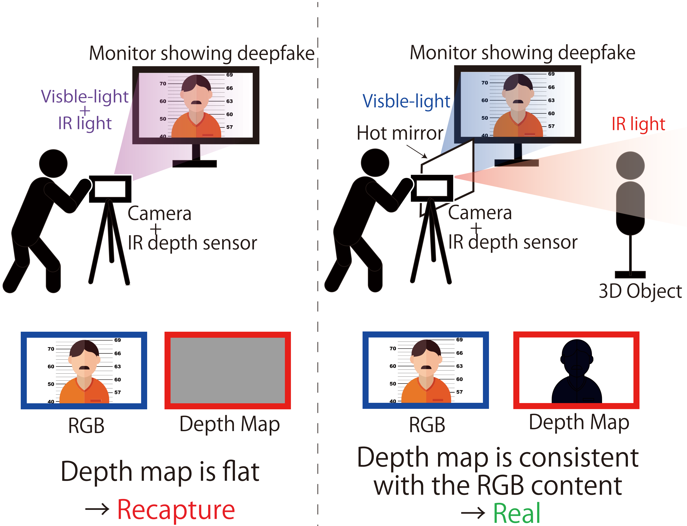
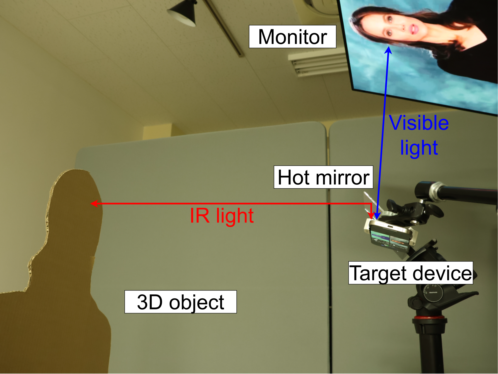
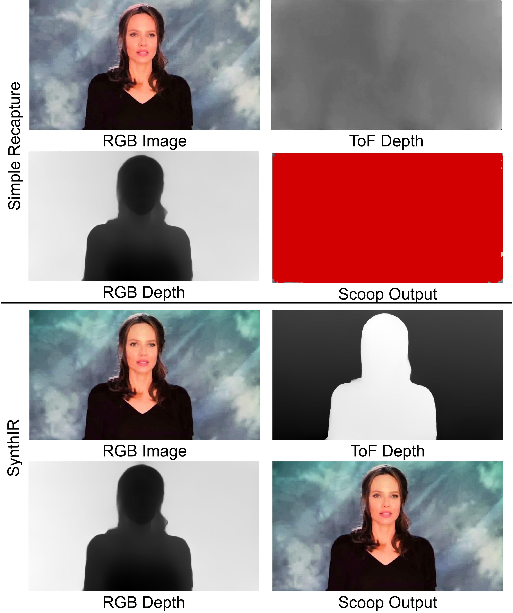
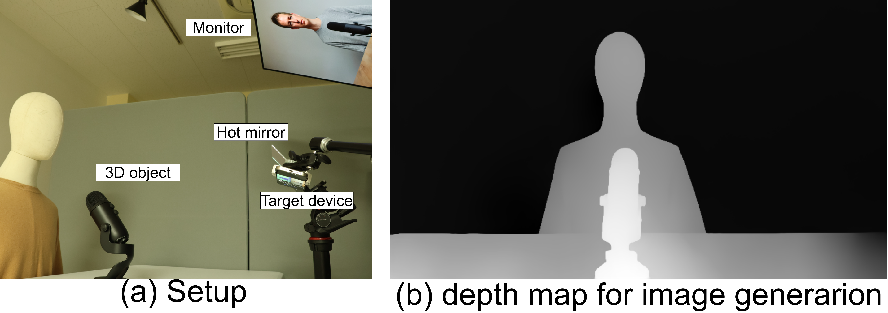
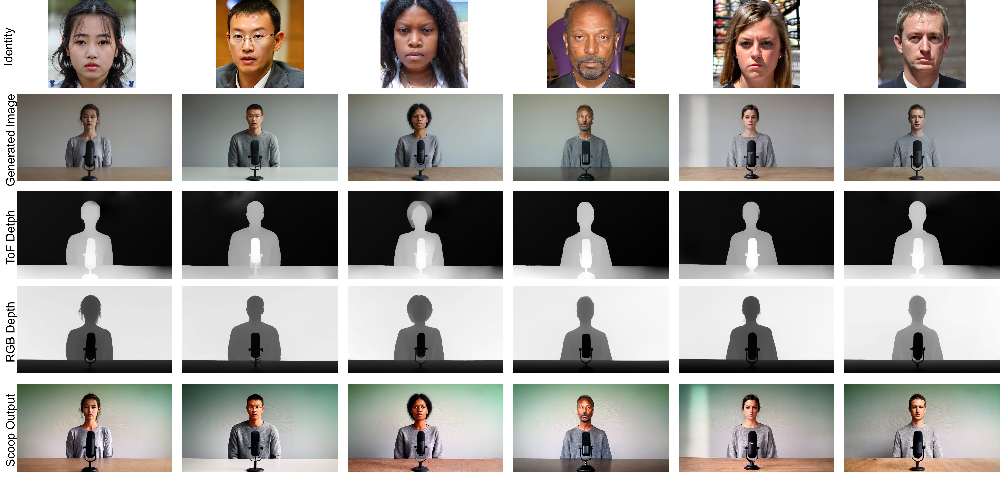

We propose SynthIR that bypasses two-sensor-based recapture detection methods (e.g. Scoop) by independently controlling the views of an RGB camera and an infrared (IR) depth sensor, including LiDAR, using a new optical synthesis with a hot mirror, an inexpensive optical element that is transparent to visible light but is reflective to IR light.
Such sensor-based detection assumes that the image and the depth of the scene are inseparable, and this paper identifies a new vulnerability that enables an attacker to control the two components independently. The key observation is that the image and depth sensors .
Adressing the issue, we propose a new defense that captures the RGB image and the depth inseparably using the same optical spectrum and within the same sensor.

We create an object for the deepfake image by cutting the cardboard in the shape of the subject (person portrait) in the scene. A pair of an image and its corresponding cardboard object is illustrated in setup figure with the monitor showing the image and the hot mirror redirecting the IR light towards the cardboard. The monitor position and hot mirror position are fixed using a monitor mount and a tripod.


Results of the image-first approach with simple recapture of a monitor (top), and the proposed attack (bottom). RGB Image and ToF Depth are the outputs of a camera and a depth sensor, respectively. Depth is the depth map estimated from RGB Image. Scoop Output shows the camera output while detected region are highlighted with red color.
In the simple recapture setting in the result figure(top), ToF Depth shows the flat surface of the monitor, and Scoop Output is entirely red, i.e., the all region is detected as suspicious. With the proposed method in the figure (bottom), the ToF Depth sees the shape of the cardboard object, and Scoop recognizes the RGB Depth and ToF Depth similar, and no region is detected in Scoop Output.
Our depth-first approach uses publicly available tools and consists of two main steps: (i) building a real scene using cardboard shapes or a mannequin, (ii) generating an image portrait to display in the monitor based on the real scene depth map, and (iii) modifying the image to achieve the attacker's desired deepfake.


The rows represent (i) the original face images in the dataset, (ii) the generated images, (iii) depth maps from the depth sensor (ToF Depth), (iv) depth maps estimated from the RGB image (RGB Depth), and (v) the final Scoop output. The figures for ToF Depth show that the silhouettes of the people and the microphones are modified from the original scene in setup figure (right) because of the sensor fusion. As a result, Scoop fails to detect the recapturing, showing no red region in the final output. The results verify the effectiveness of the depth-first approach of our proposed attack.
We show that the attack can be extended to videos by generating a video of a person talking with facial animation, which consistently bypasses depth-based a recapture detctor over 318 frames or 10 seconds.
The left video shows the injected fake depth and consistency for all frames, which makes the attack successfull over all frames, as shown in the right video (i.e, Scoop detects no suspicious region in all frames).